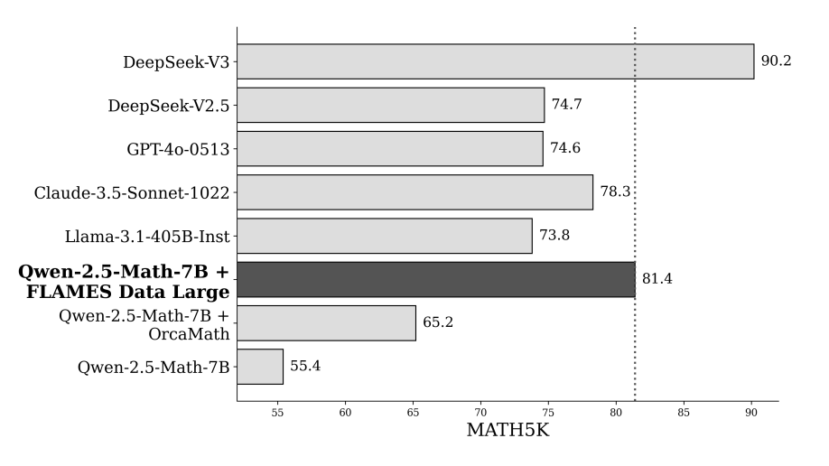

FLAMES: Improving LLM Math Reasoning via a Fine-Grained Analysis of the Data Synthesis Pipeline
EMNLP, 2025
How do synthetic data choices truly shape LLM reasoning? Our EMNLP 2025 paper, FLAMES, introduces the first unified framework to systematically compare and optimize synthetic data pipelines—revealing what really drives performance in math reasoning models.